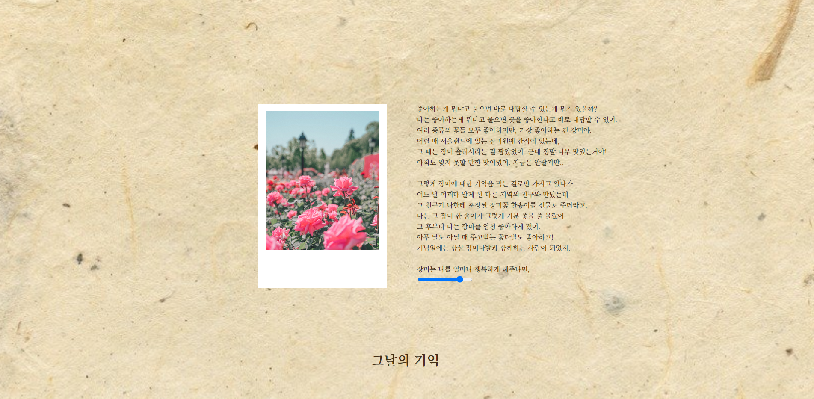

Web Design_1

콘텐츠 프로그래밍 1학년 2학기 직무수행평가1 과제물로 제출한 웹사이트.
나와 내가 좋아하는 것들에 대한 이야기를 담았습니다.
손편지라는 컨셉을 선정하여
배경에 질감을 깔고, 감성적인 무드를 강조하기 위하여 명조체의 폰트를 사용하였습니다.
콘텐츠 프로그래밍 1학년 2학기 직무수행평가1 과제물로 제출한 웹사이트.
나와 내가 좋아하는 것들에 대한 이야기를 담았습니다.
손편지라는 컨셉을 선정하여
배경에 질감을 깔고, 감성적인 무드를 강조하기 위하여 명조체의 폰트를 사용하였습니다.
콘텐츠 디자인 1학년 2학기 직무수행능력평가2 과제물로 제출한 디지털 브로셔.
차 브랜드 오설록을 주제로 선정하여, 차에 대해 가볍게 다가갈 수 있도록 하는 것을 목표로
제작하였습니다.
녹색과 베이지색을 메인 컬러로 선정하여,
가벼운 느낌을 주기 위해
가느다란 선과 도형으로 UI를 제작하는 데에 중점을 두었습니다.